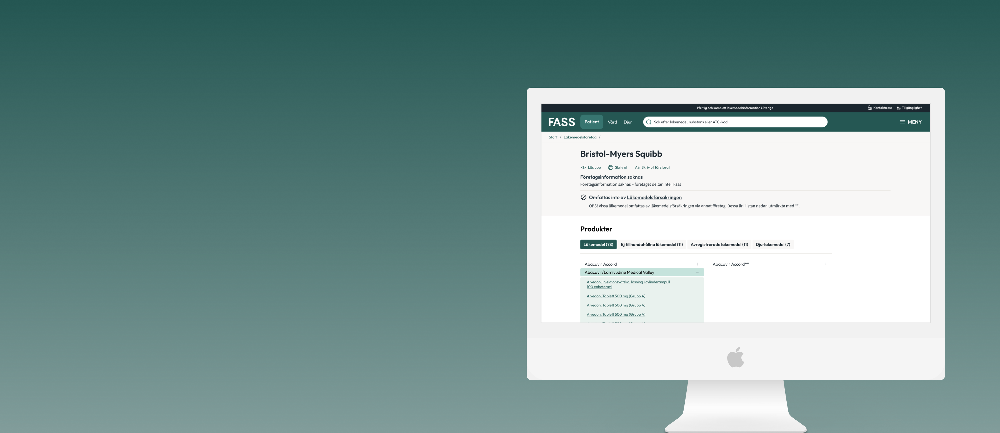

Ask about FASS
Questions may be saved and reviewed by Mikko.
Healthcare Portal
The most important drug reference tool for Swedish healthcare professionals hadn't been meaningfully updated in years. The most acute pain wasn't the visual design — it was that power users were rebuilding their settings from scratch every session on a platform they opened multiple times a day.
Client
FASS
Role
UX/UI Designer
Tools
Figma · Jira
Domain
Healthcare · Pharma · Regulated information
Team
Solo designer · Full design-to-handoff

Insight
The pronunciation interface wasn't the main problem. Power users were rebuilding their entire settings from scratch every session on a platform they opened multiple times a day.
Action
Argued for shipping persistent settings first, before anything more visible was redesigned. Sequenced the work around real friction rather than visible polish.
Impact
The highest daily friction was eliminated before the broader redesign launched. Power users got something real early — not just visual changes later.
The Problem
Background
FASS.se is the authoritative catalogue of all prescription drugs on the Swedish market. Pharmacists, doctors, and nurses use it daily to look up dosing, interactions, and pharmacological detail.
The platform had accumulated years of technical debt. The most acute pain was in pronunciation adjustment: healthcare professionals who customised TTS settings for specific drugs had to redo them every session. Settings weren't saved. For power users, this was a significant daily friction on a tool they couldn't stop using.
My Role
UX/UI Designer at LH+P. I ran the research, led the design process from discovery through to handoff, and built a component library the development team used for implementation. I was the only designer on the project.
Being the only designer meant every decision — what to research, what to prioritise, what to defer, how to document — was mine to make and defend. I had to keep the product lead and the FASS team aligned while doing the design work, and sequence features so we could ship something real before the full redesign was done.
Discovery
I ran interviews with pharmacists, medical staff, and general public users across different use contexts — clinical settings, dispensary, and home reference. I also did desktop research on TTS technology to understand the constraints and what good looked like elsewhere.
Healthcare professionals who customised their experience had to rebuild it every session. This was the highest-friction daily problem — and it was entirely fixable. Not a hard technical problem; just hadn't been prioritised.
Teams working together on clinical documentation couldn't share settings or flag discrepancies across the platform. For clinical use cases, this was a genuine workflow gap — not just a nice-to-have.
The adjustment flow required understanding TTS parameters that most users didn't have or want. The steps were procedurally complex in ways that didn't match how users thought about the task: hear how it sounds, adjust if needed.
Baseline going in
Power users were reconfiguring their settings every session. For a platform used multiple times daily, that's a measurable friction point. Clearest redesign target: settings persist, and reconfiguration time drops to zero.
[ Research findings / interview synthesis — add photo or Figma export here ]
The Hard Part
Regulatory environment
Strict requirements on how drug information can be presented. Design decisions that would be straightforward in a consumer context — surfacing the most relevant information first — required sign-off and took time.
Sequencing under uncertainty
Collaboration features needed more stakeholder discussion before they could be scoped. I had to prioritise what to design first without knowing exactly what the full scope would look like.
Speed vs thoroughness
The team needed to move at pace within regulatory constraints. Every decision had a compliance angle. The design review cycle was longer than on consumer products.
No shared success metric
We knew the outcome we wanted — persistent settings, reduced friction — but there was no formally agreed measure for success. Post-launch evaluation was harder than it needed to be as a result.
How I Navigated It
The design decision that mattered most wasn't about the interface — it was about sequencing. Persistent settings was the highest-friction, most buildable improvement available. I focused the first sprint there. That gave the team something concrete and shippable while more complex features moved through approvals — and it gave us something to test quickly.
For the pronunciation interface, I simplified the flow by reducing the number of decisions. Instead of asking users to understand TTS parameters, I proposed a model based on familiar outcomes: hear how it sounds, adjust if needed. The technical layer stayed behind the interaction.
For collaboration, which needed more stakeholder approval, I documented the user research rationale clearly so it could move through approvals with evidence behind it — not just a design suggestion.
How Might We
Design
With the sequencing decision made — persistent settings first, broader redesign second — I built across the settings model, pronunciation flow, and collaboration features in phases. That meant we could ship something real early without waiting for the full redesign to land.
Reduced cognitive load for daily reference tasks. Surface what users reach for most, deprioritise what they rarely need. First major visual update to the catalogue in several years.
Pronunciation preferences, display options, and customisations now survive sessions. The single highest-friction daily problem — rebuilt from scratch every visit — eliminated.
Outcome-first rather than parameter-first. Users hear how it sounds and adjust — the TTS parameters stay behind the interface. Reduced steps and removed the need for TTS knowledge.
Shared settings and annotation capability for teams working together on clinical documentation. Addresses the workflow gap for clinical use cases that individual settings couldn't solve.
Documented for development handoff — components built with states, variants, and usage guidance so the team can build new features without requiring a designer for every decision. Deliberately structured for post-engagement independence.
[ Interface redesign / component library — add your Figma export here ]
Testing & Iterations
Created user flow diagrams in Miro and built interactive prototypes in Figma before testing. Ran two rounds of usability testing with pharmacists and medical staff.
Round 1 — lo-fidelity: Does the persistent settings model match the mental model users have? Does the simplified pronunciation flow make sense without technical jargon?
Round 2 — hi-fidelity: Are the right things visible? Is the collaboration feature discoverable? Does the new hierarchy actually surface what users reach for most?
Iterations between rounds focused on pronunciation copy (made it more action-oriented and less technical) and collaboration feature discoverability (surfaced earlier in the settings hierarchy).
Results
What I'd do differently
Quantify the persistent settings problem earlier. A simple calculation of wasted configuration time per power user per week would have sharpened the business case and probably accelerated the approvals process. The evidence was there in the research — I just didn't package it as a number.
Push for a shared success metric before starting design. We knew the outcome we wanted, but we didn't have a formally agreed measure. That would have made post-launch evaluation cleaner and given the team a shared definition of done.
Design System
I built a component library from scratch as part of the handoff. Every component came with states, variants, and usage guidance so the development team could build new screens without needing a designer in the room for every decision.
This was a deliberate choice, not an afterthought. I knew I wouldn't be there long-term. The library was built from the start with the assumption that no designer would be in the room when the next feature was needed.
Ask about FASS